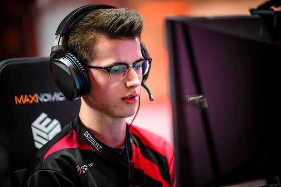
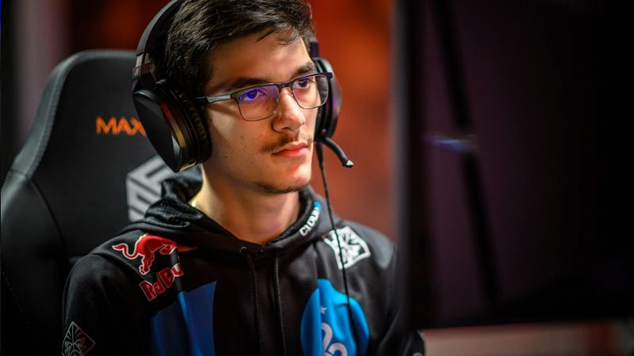
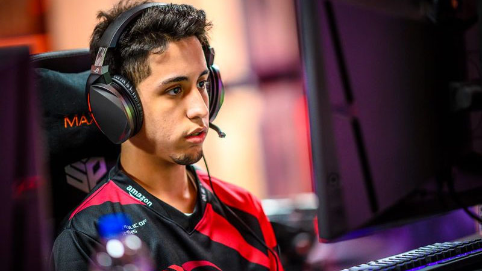

 1. GarretG. Als we kijken naar de beste Rocket League-teams, valt NRG dit seizoen zeker op. Maar zelfs onder hun selectie onderscheidt GarrettG zich als een van de beste Rocket League-spelers. GarretG bestaat al sinds het einde van 2015 en hij is begonnen met het belangrijkste onderdeel van het topklasse NRG-team. GarretG's winsten lopen nu op tot meer dan $ 400.000. Terwijl andere spelers hier boven staan, is GarretG nog steeds sterk in opkomst. Zijn recente resultaten omvatten de meeste grote toernooien, zoals de vorige NRG-leden op zijn lijst. Hij maakte deel uit van een ploeg die als eerste binnenkwam in de meeste toernooien sinds 2018. GarretG is waarschijnlijk de beste Rocket League-speler in 2021, en hij is het bekijken waard voor toekomstige prestaties..

2. Squishymuffinz is een van de beste Canadese spelers van Rocket League en over het algemeen een van de beste Rocket League-spelers in het hele spel. Hij maakt deel uit van NRG esports en heeft dezelfde geweldige resultaten behaald als de andere spelers in dat team die deel uitmaken van deze lijst. Tijdens zijn carriere in Rocket League heeft SquishyMuffinz deelgenomen aan een enorme lijst van toernooien en heeft hij in veel ervan geweldige resultaten behaald. Hij is een goed antwoord voor elke beste Rocket League-spelerslijst, maar mogelijk niet de enige topspeler.

3. Jstn is een Amerikaanse Rocket League-speler die deel uitmaakt van de NRG Squad. In deze line-up heeft hij de laatste tijd enkele van de meest indrukwekkende resultaten behaald. Zijn reeks overwinningen met dit team maakt hem zeker tot een van de top 10 Rocket League-spelers. Sommige van zijn andere teamgenoten staan ook op deze lijst, omdat het hele team op dit moment opvalt. Het is vrij moeilijk om de NRG-individuen in een ranglijst te plaatsen, omdat ze allemaal in gelijke mate bijdragen aan de magie die we op het scherm zien. Hoe dan ook, Jstn verdiende zijn plek op de lijst met zijn geweldige prestaties van het afgelopen seizoen.